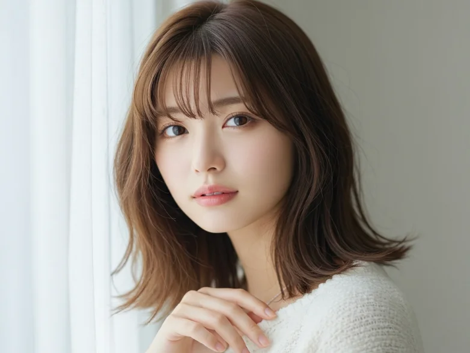
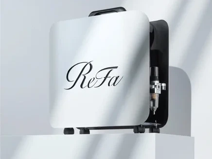
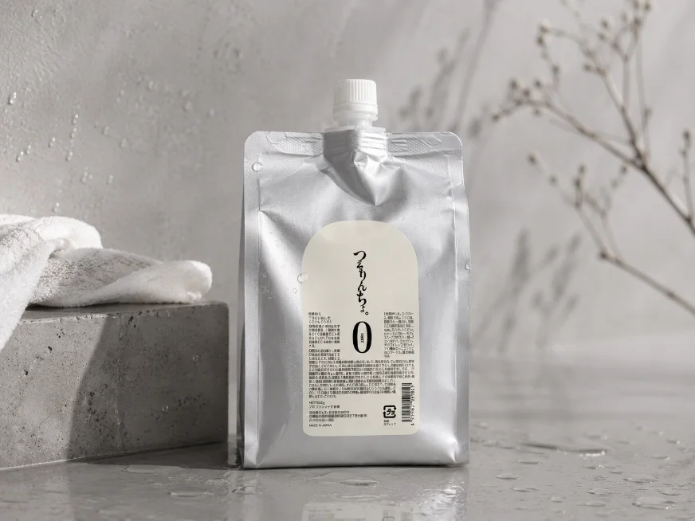
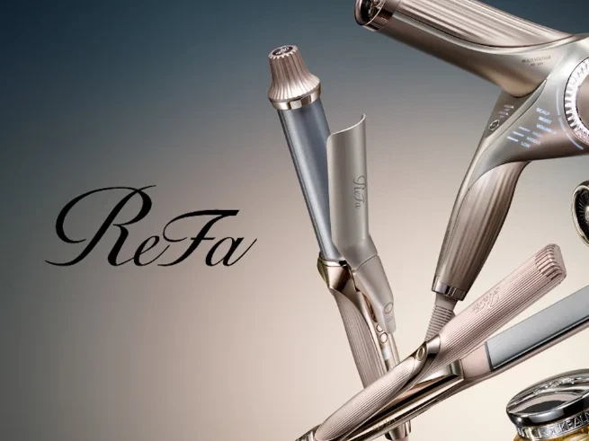

【理想を"言葉"に変えるカウンセリング】
「どんな髪にしたいか」プラス「どんな自分でいたいか」。曖昧なまま伝わらなかった想いも、ていねいな対話を通してプロの視点で言語化します。たとえば──「キメすぎたくないけど、ちゃんと見られたい」なら、ラフさと清潔感を両立する“余裕のある大人”な髪へ。「ラクしたいけど、手抜きには見せたくない」なら、乾かすだけで決まるのにツヤがある、そんなデザインに。理想と現実をすり合わせながら、あなたらしく無理なく叶う髪型へ導きます。

【美容の土台は"水"から変える】水へのこだわり
使うのは「ReFa ULTRA FINEBUBBLE VEENA」。ヴィーナが作る水で洗うだけで汚れが落ち綺麗になる“目に見えない泡の水”。家庭用シャワーの20倍のウルトラファインバブルを発生させる、美容室専用アイテムです。薬剤がなじみやすくなり、パフォーマンスが底上げ。さらに波打つように放出される水が、シャンプーの時間が極上の美容体験に変わります。

【落とすことで施術の精度を上げる】クレンジングへのこだわり
汚れや皮脂、トリートメントのコーティングが残ったままでは、薬剤の浸透にもムラが出て、仕上がりに影響します。専用クレンジングシャンプーで、髪と頭皮を素髪の状態に整えることでカラーの発色・ストレートのなじみ・トリートメントの定着まで変わります。見えないところにこそ、差が出る。“なんか綺麗”の理由は、こうしたプロの一手間にあります。

【ダメージと薬剤の力を最小限に】処理剤へのこだわり
薬剤を使う施術こそ、“入れる前に満たす”が基本です。カラーや縮毛矯正、トリートメントの前には、専用前処理「つるりんちょ。ZERO」で髪内部を補強。スカスカの状態で薬剤を入れると、発色ムラ・質感低下・色落ちの原因にも。その日の仕上がりと持ちが良くなる前処理。攻めるだけじゃなく、守るケアが仕上がりを左右する。“施術の前にもう一手間”、これが未来の手触りを変えます。

【髪の悩みは"原因"から変える】改善することへのこだわり
一時的な手触りや見た目だけ整えても、すぐに元通り。クセ・うねり・広がりには、それぞれ違った“原因”があります。たとえば毎日広がるのは、乾燥より髪の歪みが原因かもしれない。毛先のパサつきは、実はダメージではなくうねりが原因かもしれない。原因が違えば、必要な施術も変わります。その場しのぎのトリートメントではなく、あなたの髪に“意味のある提案”を届けます。

【酵素ケアで"その後の傷み"を防ぐ】後処理へのこだわり
実はダメージは、施術中だけじゃなく“帰ってから”進行することが多いんです。薬剤の残留成分が酸化・劣化して、じわじわと髪を傷めてしまうから。そこで全施術後に取り入れているのが「酵素ケア」。髪や頭皮に残った不要な成分を分解・除去することで、見えないダメージの元をゼロに近づけます。手触りやツヤだけでなく、“綺麗の持ち”まで変える。この一手間が、次回来店までの過ごしやすさに差をつけます。

【キープできるから、綺麗に伸ばせる髪に】維持することへのこだわり
美容室の帰りだけ綺麗。でも数日で扱いづらくなる──そんな経験、ありませんか？本当に大事なのは“キープ力”。髪質を根本から整えることで、毎朝のまとまりや手触りが続きます。「結べばいいや」と諦めていた髪も、ちゃんと下ろせるように。ダメージを気にせず、無理なく伸ばせる。理想の長さを目指すためにも、“綺麗が続く”という土台が必要です。

【アイロン仕上げも本気で綺麗に】スタイリングへのこだわり
仕上げで使うアイロンにも理由があります。ReFaのアイロンは、プレートの素材や温度のムラまで計算された設計。だからこそ、髪にツヤとまとまり、そして柔らかさが生まれます。「アイロン＝傷む」が当たり前だった人にも、ぜひ体感してほしい質感。おうちでも真似しやすいように、巻き方や温度のコツもお伝えしています。その場だけで終わらない“再現できる綺麗”を、一緒につくっていきましょう。

【あなたに必要なものだけを提案】ホームケアのこだわり
どんなに丁寧に施術しても、日々のケアが合っていなければ台無しに。だからこそ、髪質・ライフスタイル・習慣に合わせて、必要なケアだけを厳選してご提案しています。“今、話題だから”ではなく、“あなたの髪に結果が出るかどうか”。それがすべての判断基準。使い続けて意味があるか？コスパは見合うか？そんな視点で、無理なく継続できるアイテムだけをご紹介しています。
【常に更新し続ける技術と知識】進化へのこだわり
流行・薬剤・髪質トレンドは、日々変化しています。その中で“ずっと同じ技術”では、結果も古くなってしまう。だからこそ、最新の情報や技術を学び、現場で実践。スタッフ同士の技術共有や、メーカーとの定期的なやりとりも欠かしません。いつ来ても「今のあなたにベストな提案」ができるように。変わり続ける髪に、変わり続ける技術で応えます。